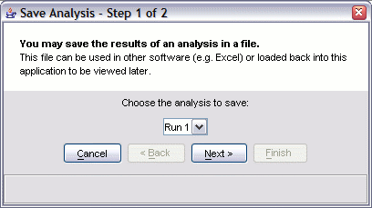

You can save an analysis you did and load it again later. You can also save the entire state of the program as a project.
Saving or loading an analysis is done in the main window using the "Analysis" menu. Use "save" when you want to save an analysis file for use in other software or documentation purposes. Use "load" when you want to add an analysis to the current view. Loading an analysis will not work unless you have already loaded the appropriate annotation file. If you want to switch annotation files, use the "Project" commands.

You can also optionally check a box to "include all genes" in the output. If you select that, each line in the output file will include a list of genes which are in the gene set.
The output format is described here
Once you have saved an analysis, you can load it back in using the "Analysis -> load analysis" item:
Note: In order to load in an analysis, you must have the same gene annotations loaded as when you did the analysis. This limitation is to avoid problems finding annotation files based on the paths stored in the result file headers. Thus if you want to send your result file to someone else to examine in ermineJ, you should also include your annotation file (and any custom gene set files).
In contrast to the save/load analysis commands, projects allow you to completely reset the software to a different annotation file, gene scores, data matrix, and (if present) analysis results.
Simply use the File ... Save project menu item. You will be prompted to save a file for the project. We recommend you save projects in the default location for the software (ermineJ.data in your home directory). The files are given the extension ".project". The resulting file contains the settings for the session, as well as the analysis results, if any.
Use the File ... Load project menu item to select a ".project" file. The software will then proceed to go through the same routine as when the sofware is initially started, loading the annotations, and then loading the gene score and data matrix file you used; followed by loading the analysis results stored in the project, if any.